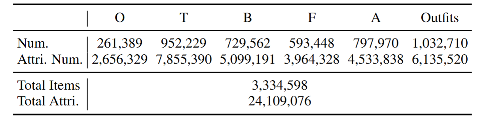
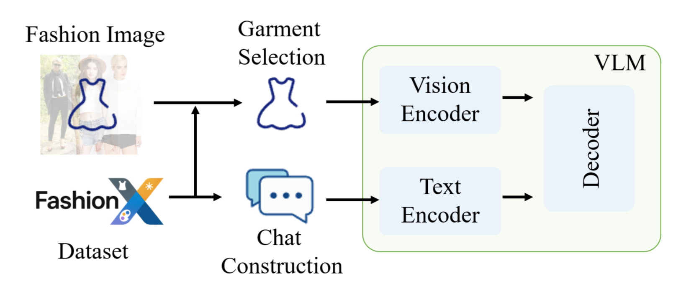
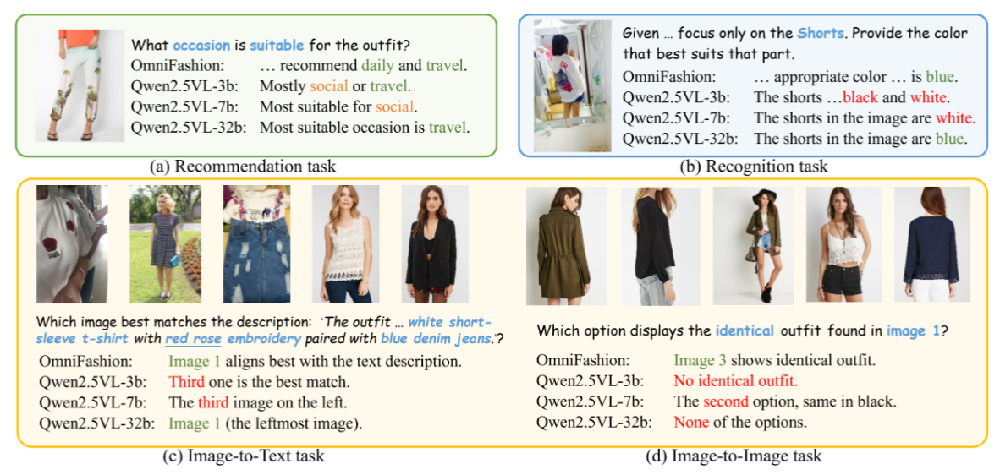

OmniFashion
Towards Generalist Fashion Intelligence via Multi-Task Vision-Language Learning
Abstract
Fashion intelligence spans multiple tasks, retrieval, recommendation, recognition, and dialogue, yet remains hindered by fragmented supervision and incomplete fashion annotations. These limitations jointly restrict the formation of consistent visual-semantic structures, preventing recent vision-language models (VLMs) from serving as a generalist fashion brain that unifies understanding and reasoning across tasks. Therefore, we construct FashionX, a million-scale dataset that exhaustively annotates visible fashion items within an outfit and organizes attributes from global to part-level. Built upon this foundation, we propose OmniFashion, a unified vision-language framework that bridges diverse fashion tasks under a unified fashion dialogue paradigm, enabling both multi-task reasoning and interactive dialogue. Experiments on multi-subtasks and retrieval benchmarks show that OmniFashion achieves strong task-level accuracy and cross-task generalization, highlighting its offering of a scalable path toward universal, dialogue-oriented fashion intelligence.
Framework

Dataset: The Power of FashionX
Addressing data scarcity with massive, exhaustively annotated visible fashion items across diverse scenarios.
Organized attributes ranging from global outfit semantics down to fine-grained, part-level details.
Transforms fragmented fashion attributes into a consistent visual-semantic dialogue structure.
OmniFashion builds on FashionX to support unified vision-language learning. We first present the FashionX annotation pipeline, which produces large-scale annotations with hierarchical semantics. We then introduce a unified task formulation along with a progressive training strategy, explaining how diverse fashion tasks are cast into a consistent paradigm. Next, we describe the inference setup of the framework. Finally, we provide statistical analyses of FashionX, summarizing the task composition and illustrating how it supports both alignment and unified multi-task learning.


How We Build High-Quality Dialogue Samples
Item: Blouse
Material: Chiffon
Sleeve: Puff sleeve
Style: Elegant, Summer
OmniFashion: The top is an elegant chiffon blouse featuring puff sleeves, making it highly suitable for summer wear.
By mapping dense attributes into natural language templates, we enable the model to learn complex reasoning.

Simulated User Q&A Scenarios
Experience how OmniFashion acts as a generalist fashion assistant in real-world interactive dialogues.
Training
We then introduce a unified task formulation along with a progressive training strategy, explaining how diverse fashion tasks are cast into a consistent paradigm. Next, we describe the inference setup of the framework. Finally, we provide statistical analyses of FashionX, summarizing the task composition and illustrating how it supports both alignment and unified multi-task learning.

Training Details
OmniFashion unifies all fashion tasks into a dialogue-based QA format, enabling retrieval, recognition, and reasoning within a single framework.
The model first learns fashion-aware visual-semantic grounding via template-based QA pairs constructed from FashionX annotations.
The same QA formulation is extended to multiple fashion tasks through task-specific question-answer templates:
Reasons about style compatibility and scenario suitability via single/multi-image inputs.
Reformulates text-image matching and comparison as dialogue queries over candidate sets.
Focuses on fine-grained attributes like color, material, and complex design details.
Handles condition-based queries with concise answers for style or occasion judgment.
Quantitative & Qualitative Results

Comparison with the SOTA methods across eight fashion dialogue subtasks, including overall style, part style, occasion, color recognition, and four retrieval dialogue settings (I2T, T2I, I2I, CIR). The table reports both A@1 and Acc metrics. OmniFashion shows consistently strong performance across all subtasks and achieves the highest mean accuracy among the open- and close-source models.
High-Quality Generation Examples
The qualitative results below demonstrate OmniFashion's exceptional capability in visual cue extraction and multi-modal reasoning. By successfully grounding fine-grained concepts (underlined), the model delivers accurate predictions (green) while avoiding common failure modes (red) seen in standard VLMs.

In this work, we present FashionX and OmniFashion as two complementary contributions toward advancing generalist fashion intelligence. FashionX offers large-scale, structured, and automatically generated annotations that address the incompleteness and inconsistency of existing datasets. Its unified, head-to-toe schema integrates global outfit semantics with fine-grained part attributes, providing a coherent foundation for multi-level fashion understanding. Built upon this foundation, OmniFashion reformulates diverse fashion tasks, including reasoning, attribute recognition, and cross-modal retrieval, into a unified fashion dialogue paradigm. This formulation connects detailed visual cues with holistic outfit interpretation and supports consistent learning across heterogeneous objectives. Surpassing all comparable open-source VLMs and remaining competitive with much stronger closed-source models across style reasoning, multi-image comparison, and fine-grained retrieval, OmniFashion shows that unified dialogue learning and structured fashion supervision can meaningfully advance VLMs toward practical generalist fashion intelligence.